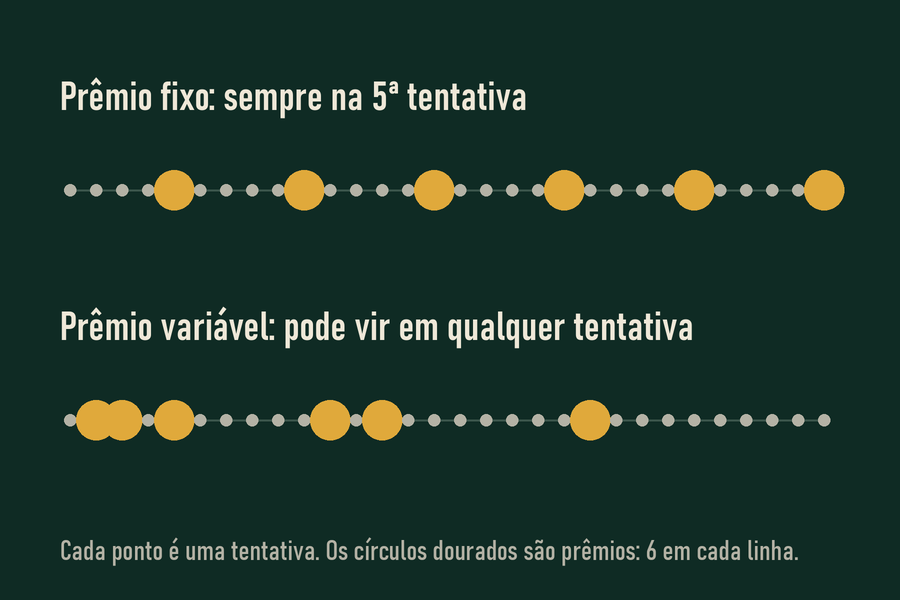

O experimento dos pombos
Nos anos 1950, o psicólogo B. F. Skinner treinou pombos para bicar um botão em troca de comida. Quando a comida vinha sempre depois do mesmo número de bicadas, os pombos trabalhavam, comiam e faziam pausas. Quando ela vinha depois de um número imprevisível de bicadas, eles bicavam sem parar, e continuavam bicando por muito tempo depois que a comida deixava de vir.
Esse padrão tem nome: reforço em razão variável. É o mais difícil de extinguir que se conhece, e é exatamente o que uma aposta oferece. Cada rodada pode ser a premiada, então nenhuma parece uma boa hora para parar.

Jogue o multiplicador
Nos jogos de multiplicador, um número sobe a partir de 1,00x e cai a qualquer momento. Quem retira antes da queda leva a aposta multiplicada. Quem espera demais perde tudo. Você não sabe quando ele cai, e é exatamente por isso que é difícil parar.
Aposte R$ 10 de mentira e tente retirar antes da queda.
Saldo: R$ 100,00
Onde as últimas rodadas caíram:
O ponto de queda é sorteado antes da rodada começar, com 3% de vantagem para a casa. Em média, cada R$ 100 apostados devolvem R$ 97, não importa quando você retira.
Onde isso aparece nas bets
- Rodadas grátis e bônus que aparecem sem aviso, quando a pessoa está prestes a sair.
- Notificações no celular em horários aleatórios, cada uma com uma promessa diferente.
- Apostas ao vivo, em que um jogo de futebol vira dezenas de pequenas apostas por minuto.
- Jogos de cassino online com rodadas de poucos segundos, que multiplicam o número de chances de prêmio por hora.
Por que a vitória ocasional é pior do que a derrota constante
Se uma pessoa perdesse sempre, pararia logo. A vitória de vez em quando é o que mantém o hábito, porque ensina que continuar é o comportamento certo. Por isso as bets divulgam tanto os ganhadores: cada prêmio visível reforça o comportamento de milhares de pessoas que não ganharam.